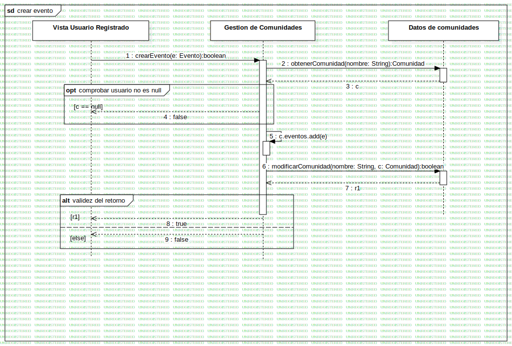

Interaction1
UMLInteraction
Untitled
::
Casos de Uso
::
Crear Evento
::
Interaction1
Description
none
Diagrams

crear evento
Fragments
comprobar usuario no es null
validez del retorno
Participants
Gestion de Comunidades
Vista Usuario Registrado
Datos de comunidades
Messages
Message1 (Vista Usuario Registrado→Gestion de Comunidades)
Message2 (Gestion de Comunidades→Datos de comunidades)
c (Datos de comunidades→Gestion de Comunidades)
false (Gestion de Comunidades→Vista Usuario Registrado)
c.eventos.add (Gestion de Comunidades→Gestion de Comunidades)
Message3 (Gestion de Comunidades→Datos de comunidades)
r1 (Datos de comunidades→Gestion de Comunidades)
true (Gestion de Comunidades→Vista Usuario Registrado)
false (Gestion de Comunidades→Vista Usuario Registrado)
Properties
Name
Value
name
Interaction1
stereotype
null
visibility
public
isReentrant
true
Owned Elements
crear evento